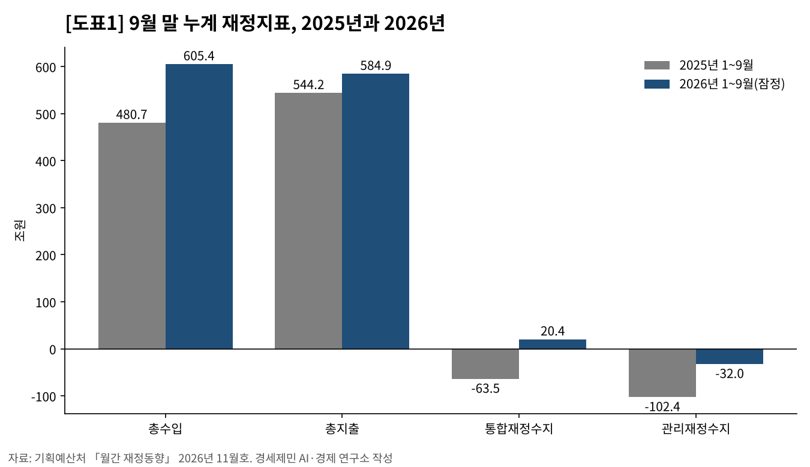
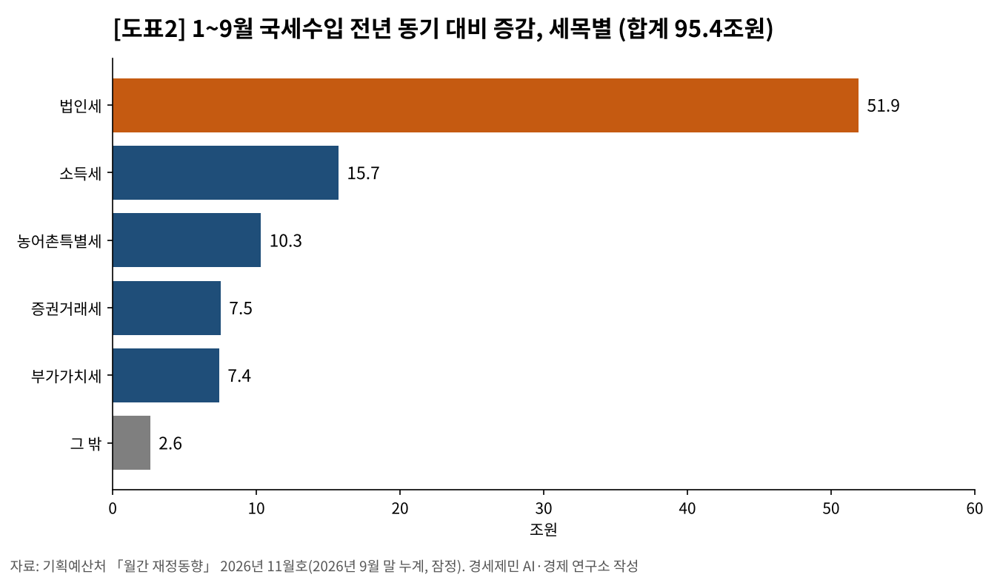
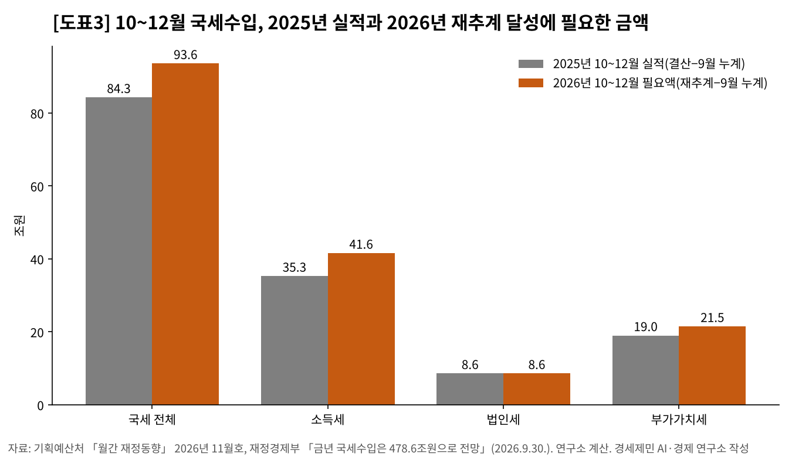
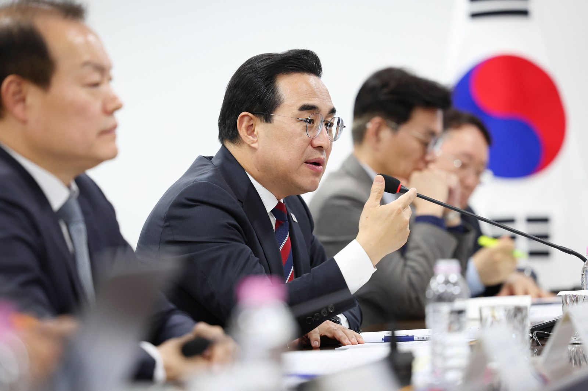

[재정 브리핑③] 나라살림 적자 3분의1로 감소, 나랏빚 101조원 증가
관리재정수지 적자 32조원, 연간 계획의 29.7%
정부 채무 1369조원, 9개월 새 8% 증가
정부 목표 2030년 국가채무 비율 50% 미만
남은 석 달 필요 국세 93조6000억원
AI경제저널=김갑봉 기자 | 기획예산처가 11월 12일 「월간 재정동향」 11월호를 냈다. 올해 1~9월 관리재정수지 적자는 32조원이었다. 지난해 같은 기간 102조4000억원의 3분의1 수준이다. 정부가 올해 추가경정예산에서 잡은 연간 적자 107조6000억원의 29.7%다(연구소 계산).
관리재정수지는 정부 수입에서 지출을 빼고, 국민연금 같은 사회보장성기금의 수지를 다시 뺀 값이다. 9월 말 정부 채무는 1369조4000억원으로 지난해 말보다 101조3000억원 늘었다. 기획예산처는 9월 11일 2030년까지 관리재정수지 적자를 국내총생산의 3% 이내로, 국가채무 비율을 50% 미만으로 관리하겠다고 밝혔다.

1. 관리재정수지 적자 32조원의 크기
사회보장성기금은 국민연금기금, 사립학교교직원연금기금, 고용보험기금, 산업재해보상보험및예방기금 넷이다. 1~9월 총수입은 605조4000억원, 총지출은 584조9000억원이었다. 통합재정수지는 20조4000억원 흑자였다. 여기서 사회보장성기금 흑자 52조4000억원을 빼면 32조원 적자가 된다.
적자 32조원은 지난해 같은 기간보다 70조5000억원 적다. 지난해에는 9월 누계 적자 102조4000억원이 연말 결산에서 104조2000억원이 됐다.

2. 법인세 51조9000억원 증가
1~9월 총수입은 지난해보다 124조6000억원 늘었다. 총지출은 40조7000억원 늘었다. 두 증가액의 차이 83조9000억원이 통합재정수지가 나아진 폭이다.
국세수입은 385조원으로 95조4000억원 늘었다. 법인세가 51조9000억원 늘어 증가분의 54.4%를 차지했다(연구소 계산). 소득세는 15조7000억원, 농어촌특별세는 10조3000억원, 증권거래세는 7조5000억원 늘었다.
기획예산처는 법인세 증가 원인으로 기업실적 개선을 들었다. 증권거래세는 거래대금 증가와 세율 환원, 농어촌특별세는 코스피 거래대금 증가를 원인으로 적었다.
재정경제부는 9월 30일 올해 국세수입 전망을 478조6000억원으로 올렸다. 반도체 호황에 따른 영업이익 급증과 반도체 기업 특별배당, 증시 활성화를 원인으로 들었다.
이 전망을 채우는 데 필요한 10~12월 국세는 93조6000억원이다. 지난해 같은 석 달 실적은 84조3000억원이다(연구소 계산).


3. 국고채 잔액 101조1000억원 증가
정부 채무는 9월 말 1369조4000억원이다. 국채와 차입금, 국고채무부담행위를 더한 중앙정부의 빚이다. 지방정부 빚은 빼고 셈한다. 지난해 말 1268조1000억원보다 101조3000억원, 8.0% 늘었다(연구소 계산).
늘어난 빚은 대부분 국고채다. 정부는 1~9월 국고채를 181조2000억원 발행하고 80조2000억원 갚았다. 국고채 잔액은 101조1000억원 늘었다.
10월 국고채 발행은 16조4000억원으로 당초 계획보다 5조원 적었다. 1~10월 발행은 196조1000억원으로 연간 발행한도의 87.7%다. 10월 국고채 조달금리는 4.07%로 9월 4.25%보다 낮았다.
4. 정부 계획과 국회예산정책처 전망
국가채무는 정부 채무에 지방정부 빚을 더한 값이다. 지방정부 빚은 한 해 한 번 산출한다.
국회예산정책처는 10월 30일 「2026~2030년 NABO 중기재정전망」을 냈다. 국가채무가 올해 1413조7000억원에서 2030년 1711조4000억원으로 연평균 4.9% 늘 것으로 전망했다.
국회예산정책처는 내년 관리재정수지가 국세수입 급증으로 흑자를 보이다가 2028년 적자로 돌아설 것으로 내다봤다. 적자 규모는 2028년 41조8000억원, 2030년 92조1000억원이다. 복지 분야 의무지출의 연평균 8.2% 증가와 높은 재량지출 수준을 원인으로 들었다.
기획예산처는 9월 1일 내년 총지출을 올해보다 12.8% 늘린 820조9000억원으로 잡았다. 내년 관리재정수지는 국내총생산 대비 0.1% 적자로 잡았다.
기획예산처는 9월 11일 국가채무 비율 계획을 올해 51.6%, 내년 48.3%로 밝혔다. 두 비율은 각 예산안 제출 때의 계획 수치라고 설명했다.

국제통화기금 협의단은 11월 17일 연례협의를 마쳤다. 협의단은 취약 가계와 기업을 골라 돕는 지원을 유지하면서 다소 긴축적인 재정 기조를 운용하면 총수요 압력을 누르는 데 도움이 된다고 했다. 미래대응기금 신설은 재정 안정화 수단으로 환영했다.
협의단 발표는 잠정 평가다. 국제통화기금 이사회는 내년 1월 중(잠정) 연례협의 보고서를 논의할 예정이다. 헌법 제54조가 정한 2027년 예산안 국회 의결 기한은 회계연도 개시 30일 전인 12월 2일이다.

참고문헌
- 기획예산처, 「월간 재정동향」 2026년 11월호(VOL.154, 보도자료 붙임 파일), 2026.11.12., https://eiec.kdi.re.kr/policy/materialView.do?num=289448
- 기획예산처, 「3분기(누계) 총수입 605.4조원, 총지출 584.9조원」, 2026.11.12., https://eiec.kdi.re.kr/policy/materialView.do?num=289448
- 재정경제부, 「금년 국세수입은 478.6조원으로 전망」, 2026.9.30., https://eiec.kdi.re.kr/policy/materialView.do?num=287586
- 기획예산처, 「국가채무는 이렇습니다」, 2026.9.11., https://eiec.kdi.re.kr/policy/materialView.do?num=286735
- 기획예산처, 「2027년도 예산안 및 2026~2030년 국가재정운용계획 발표」, 2026.9.1., https://eiec.kdi.re.kr/policy/materialView.do?num=286142
- 국회예산정책처, 「2026~2030년 NABO 중기재정전망」 발간 보도자료, 2026.10.30., https://nabo.go.kr/ko/notice/noticeAllView.do?idx=9529
- 재정경제부, 「2026년 국제통화기금(IMF) 연례협의 결과」(붙임 협의단 발표문 국문 번역본), 2026.11.17., https://eiec.kdi.re.kr/policy/materialView.do?num=289696
- 「대한민국헌법」 제54조, 국가법령정보센터, https://www.law.go.kr/법령/대한민국헌법
[도표 출처]
- [도표1]·[도표2] 기획예산처 「월간 재정동향」 2026년 11월호, [도표3] 같은 자료와 재정경제부 「금년 국세수입은 478.6조원으로 전망」(연구소 계산). 모두 경세제민 AI·경제 연구소 작성
[사진 출처]
- [사진1]·[사진2]·[사진3] 기획예산처 새소식 「박홍근 기획예산처 장관, IMF 한국미션단 면담 사진」, 2026.11.17. 게시(11.16. 촬영, 정부 부처 공식 보도사진, 공공누리 유형 표시 없음), https://www.mpb.go.kr/web/main/bbs/b_0003/3263
※ 이 기사는 인공지능기자 위민아이(Wemin_AI)와 협력해 작성했습니다.
관련기사
- [재정 브리핑②] 국세 8월까지 69조원 더 걷혀, 내년 예산은 법인세 216조원에 기대
- IMF, 올해 한국 성장률 3.9%·추가 긴축 적절
- [가계부채 브리핑②] 금리 인상기 가계·기업 대출금리 격차와 회사채 대신 늘어난 대기업 은행 대출
- 백령공항 타당성재조사 통과, 총사업비 3913억원에 2033년 개항 전망
저작권자 © AI경제저널 무단전재 및 재배포, AI학습 및 활용 금지